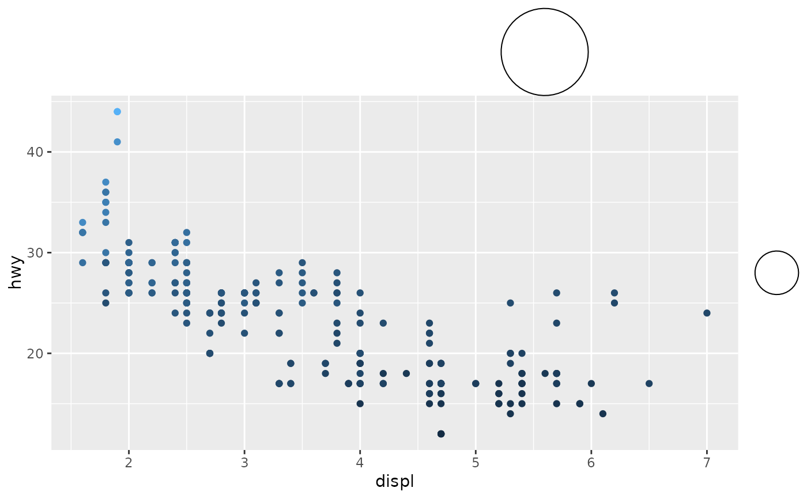

This guide displays a user-provided grob.
Usage
gizmo_grob(
grob,
width = grobWidth(grob),
height = grobHeight(grob),
hjust = 0.5,
vjust = 0.5,
position = waiver()
)Arguments
- grob
A
<grob>to display.- width, height
A [
<unit[1]>][grid::unit] setting the allocated width and height of the the grob respectively.- hjust, vjust
A
<numeric[1]>between 0 and 1 setting the horizontal and vertical justification of the grob when used as a guide for thexandyaesthetics.- position
Where this guide should be drawn: one of
"top","bottom","left", or"right".
See also
Other gizmos:
gizmo_barcap(),
gizmo_density(),
gizmo_histogram(),
gizmo_stepcap()
Examples
circle <- grid::circleGrob()
# A standard plot with grob gizmos
ggplot(mpg, aes(displ, hwy, colour = cty)) +
geom_point() +
guides(
x.sec = gizmo_grob(
circle, hjust = 0.75,
width = unit(2, "cm"), height = unit(2, "cm")
),
colour = gizmo_grob(
circle, width = unit(1, "cm"), height = unit(1, "cm")
)
)
